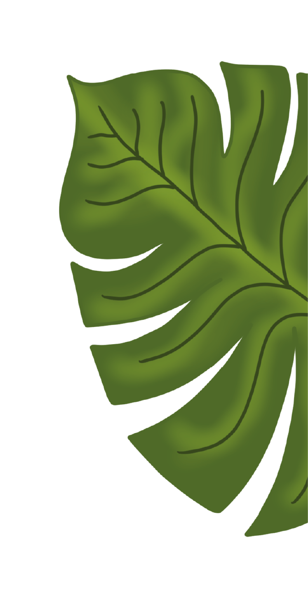
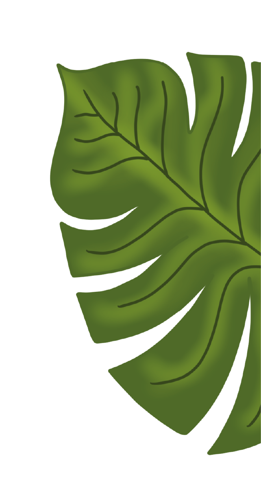

CV
Werkervaring
Eigenaar jan. 2019 – Heden
Tasty Creativity, Amsterdam
Onderhouden van de website, bijhouden van de sociale media. Het maken van producten. Het verwerken van de financiële informatie. Logistieke proces verzorgen.
Verkoopadviseur aug. 2020 - Heden
IJburg boeken (Voormalig, Bruna IJburg), Amsterdam
Ontvangst goederen, verwerken van bestellingen, producten verkoop klaar maken, klanten adviseren, verkoop afhandelen etc.
Bake-off/vers medewerkster juli 2013 - juli 2015
Dirk van den Broek, Amsterdam
Het afbakken van brood en banketproducten, vakkenvullen van alle versproducten, spiegelen van goederen, etc.
Stages
Stagiaire Verkoopadviseur feb. 2020 - maart 2020
Bruna IJburg, Amsterdam
Ontvangst goederen, verwerken van bestellingen, producten verkoop klaar maken, klanten adviseren, verkoop afhandelen etc.
Stagiaire Verkoopadviseur mei 2018 - juli 2018
De Nieuwe Boekhandel, Amsterdam
Ontvangst goederen, verwerken van bestellingen, klanten adviseren, verkoop afhandelen, verantwoordelijk voor de uitstraling van de winkel en etalage. Assisteren bij evenementen.
Stagiaire Banketbakker sept. 2016 - mei 2017
Petit Gâteau, Amsterdam
Alle voorkomende werkzaamheden in een patisserie. Bereiden van deeg, vullen en maken van taartjes en hartige producten.
Stagiaire Banketbakker nov. 15 - april 2016
Banketbakkerij Mastenbroek, Amsterdam
Gebak versieren en afmaken, vullingen maken, degen maken, producten verwerken
Stagiaire Banketbakker feb. 2015 - okt. 2015
Patisserie Kuyt, Amsterdam
Gebak versieren, vullingen maken, mise en place.
 
